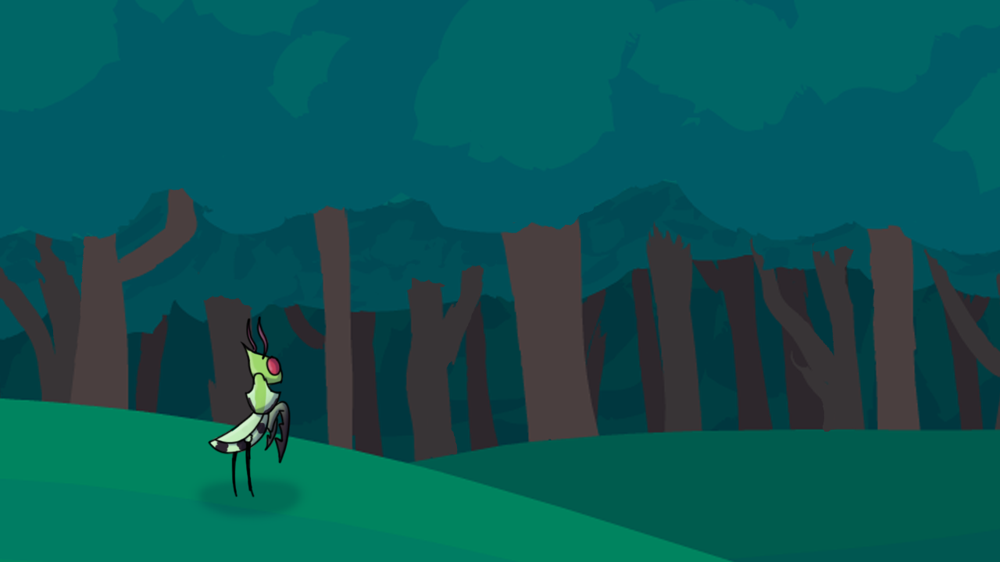
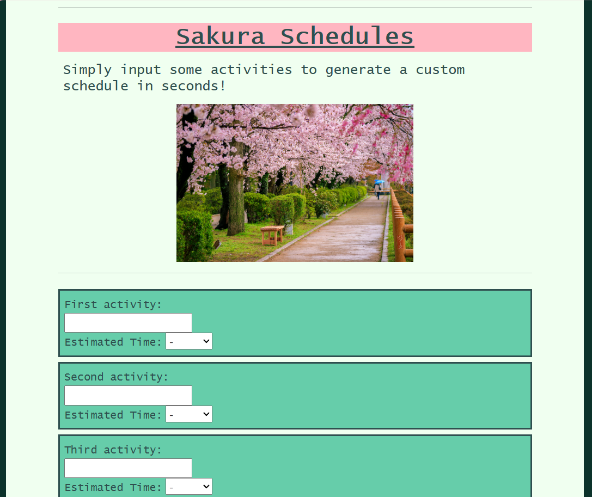
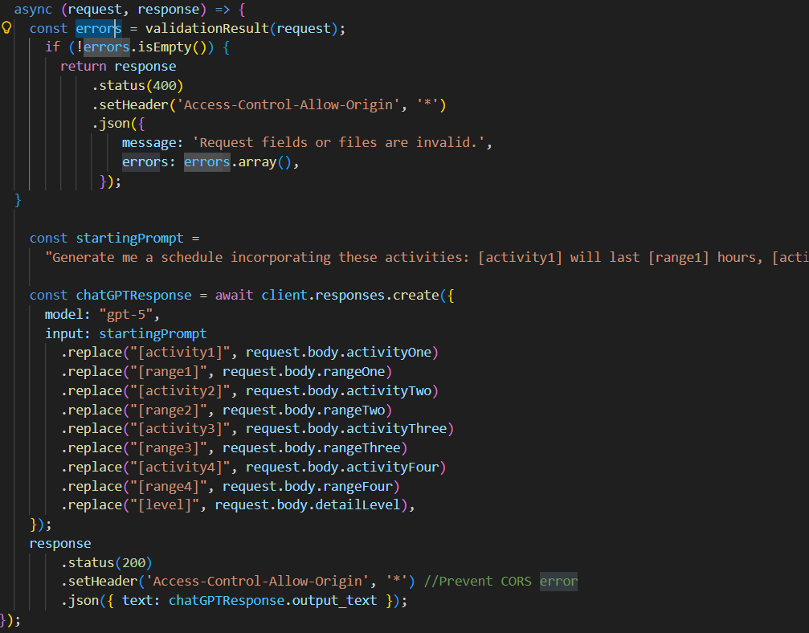

Zoe Harmaning
Boise, ID | zoe.harmaning@icloud.com | (425) 287-0404
A passionate programmer and artist seeking to grow her skills in a team environment.
Unity 2D Platformer
My first project created with Unity was a 2D platformer game for a college-level game design course. I created the game using C# and Unity's built-in physics engine, and I designed the concept, levels, and artwork myself. The game features a variety of obstacles and enemies, as well as collectibles to keep players engaged. I am proud of this project because it allowed me to learn the basics of game development and gave me the opportunity to create something fun and interactive from scratch.

To create this platformer, I had to learn and continue growing and honing my skills with C#. I had to do this within the context of Unity's 2D workspace, and use it to build engaging and creative levels for the player to interact with. I also designed and drew all of the sprites, animations, and assets in Adobe photoshop and illustrator.
Fantasy Character Design

One of my college courses required me to brainstorm and design a fantasy character using Adobe creative cloud. In order to do this, I gathered references and used them to create my design. I enjoyed researching different elements of clothing and patterns to create a character with mysterious and powerful look. I worked to give the design an otherworldly appearance, balancing symmetry and asymmetry for a more interesting look.
To create this character design, I sought inspiration and references from online, combining them into a unique and cohesive design. To create the sketch, I used Adobe Photoshop in addition to my foundation of art principles.
AI Prompt Website
A recent college-level project required me to create a form that users can fill out to recieve an AI-generated response. This website acts as a schedule-planner, taking several activities from the user, inserting it into a prompt, sending it to ChatGPT, then displaying the answer to the user. The goal was to create something that could impliment AI in a practical way.

